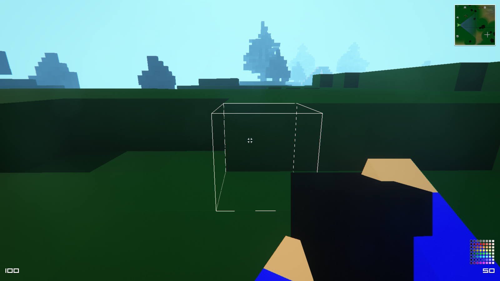

Building OpenSpades on Ubuntu 14.04
August 19, 2014
OpenSpades is a multiplayer voxel-based FPS with fully destructible terrain and pretty complete building mechanics. Based on an older game called Ace of Spades, I'd have to say it really captures the feel of the original:
The downloads page has packages for Windows and OS X, so give it a spin! On Ubuntu, we'll need to be a little creative to get things running:
- The
libopenal-dev,libpng-dev, andlibtiff-devpackages are required - without them, the program will build but not run. - "SDL_Image" needs to be configured with the
--disable-png-sharedoption. - CMake and Make need to be available. While Make usually is, CMake often isn't.
- A resource pack to actually run the game - an archive with the models, sounds, and etc. These are available from a different place, and the game will not run without one.
Here's a nice bash script to do the whole build from scratch. When run with something like bash build-openspades.sh, the script downloads, builds, and installs the game completely automatically. You may need to enter your password when prompted in order to do the actual installation.
Additionally, if you're running Ubuntu, here's a prebuilt DEB package for 14.04 (Trusty Tahr).